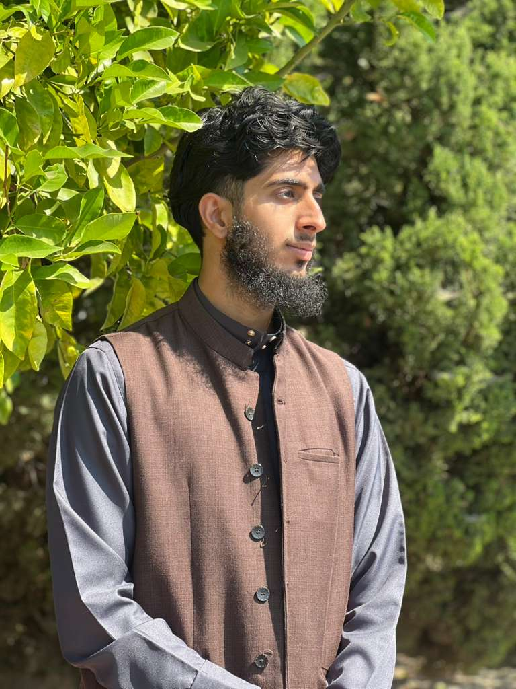

Ihsan Sarwar
Undergraduate Student at University of California, Riverside

📖 Education
- BS in Computer Science in Business Applications - University of California, Riverside (2021-2026)
- High School Diploma - Riverside STEM Academy (2017-2021)
💻 Work Experience
- Restaurant Manager - Elias Pita (2021-Present)
- Handle cash flow, inventory management, vendor coordination, and employee scheduling to ensure adequate coverage and work-life balance.
- Handle customer inquiries and concerns with professionalism, resolving issues promptly and ensuring a positive overall dining experience.
- Weekend School Principal - Islamic Center of Riverside (2021-2022)
- Oversee day-to-day operations, including scheduling, budgeting, and resource management, to ensure the smooth functioning of the weekend school.
- Design and oversee a comprehensive curriculum that integrates Islamic studies with secular subjects, fostering a holistic and balanced educational experience for students.
👍 Skills
- Programming Languages:
- C++
- Python
- HTML/CSS
- SQL
- Tailwind
- Tool/Technologies:
- Git
- React
- Node.js
🔍 Subject Interests
Web Development: I really like seeing my code instantly running and changing while I work on it, since I came from a background of no CS.
AI/ML: I really like knowing what will be taking over the future of the Software Engineering world, in order to be ahead of the waves.